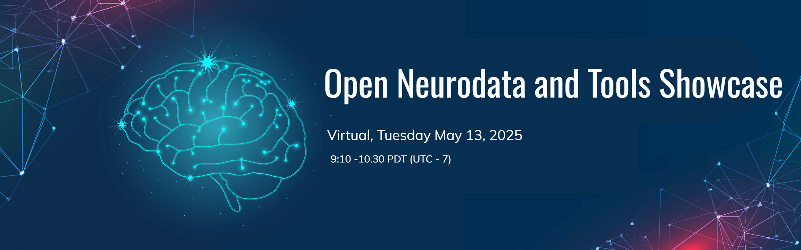

The DANDI Archive now has 300+ neurophysiology datasets in the Neurodata Without Borders format spanning many species, brain areas, task types, and imaging modalities. These include datasets from Allen Institute OpenScope, the MICrONS project, and the International Brain Laboratory Brain Wide Map, as well as diverse contributions from neuroscience labs around the world.
The Open Neurodata and Tools Showcase is a free virtual event in Gather where attendees can meet data contributors and tool developers, explore publicly available neurophysiology datasets in DANDI, and discover open-source tools integrated with the NWB ecosystem. This event provides an opportunity to connect with both dataset creators and tool developers to discuss their work, including open research questions and potential applications.
This virtual event is open to anyone interested in neurophysiology data and tools, including but not limited to:
If you are interested in attending the event, register here.
If you are interested in presenting a dandiset or tool, register as a presenter at Open Neurodata Showcase 2025 here
The Neurodata and Tools Showcase is also part of a multi-day NWB Data Conversion workshop. If you are interested in attending these additional sessions to learn more about converting your own data to NWB and publishing on DANDI please register here and see the event webpage for more details.
| Session | Speakers | Time: Pacific |
|---|---|---|
| Gather space opens to participants | 8:55 am | |
| Introduction to the data and tools showcase | Organizers | 9:00-9:10am |
| Virtual poster session | Data Contributors and Tool Developers | 9:10-10:30am |
Program chairs:
Please see the Code of Conduct for all NWB events.
This website and related content were prepared as an account of or to expedite work sponsored at least in part by the United States Government. While we strive to provide correct information, neither the United States Government nor any agency thereof, nor The Regents of the University of California, nor any of their employees, makes any warranty, express or implied, or assumes any legal responsibility for the accuracy, completeness, or usefulness of any information, apparatus, product, or process disclosed, or represents that its use would not infringe privately owned rights.
Reference herein to any specific commercial product, process, or service by its trade name, trademark, manufacturer, or otherwise, does not necessarily constitute or imply its endorsement, recommendation, or favoring by the United States Government or any agency thereof, or The Regents of the University of California. Use of the Laboratory or University’s name for endorsements is prohibited.
The views and opinions of authors expressed herein do not necessarily state or reflect those of the United States Government or any agency thereof or The Regents of the University of California. Neither Berkeley Lab nor its employees are agents of the US Government.
Berkeley Lab web pages link to many other websites. Such links do not constitute an endorsement of the content or company and we are not responsible for the content of such links.